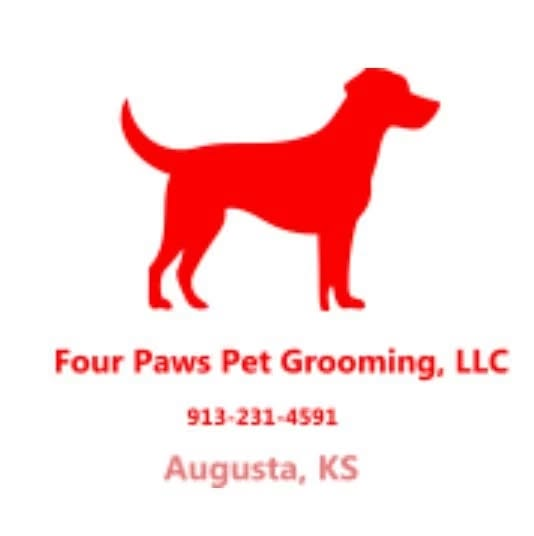

Full grooms
Consistent cuts for poodles, collies and more.
Ask about full grooms →
Four Paws Pet GroomingAppointment-based dog and cat grooming in Augusta, with consistent cuts, reliable scheduling and a groomer who takes time to hear what you want.
Consistent cuts for poodles, collies and more.
Ask about full grooms →Badly matted dogs brought back to looking beautiful.
Ask about matted coats →Gentle cuts for cats, too.
Ask about cat grooming →Our dog was very matted and she looks so beautiful now. Nobody compares.
She took plenty of time talking with me about what I wanted, and our collie looks better than I imagined.
1224 Leckliter Dr, Augusta, KS 67010
Call nowGet directionsEmail groomingfourpaws@gmail.comFacebook page| Mon–Fri | 8 AM–6 PM |
|---|---|
| Sat–Sun | Closed |